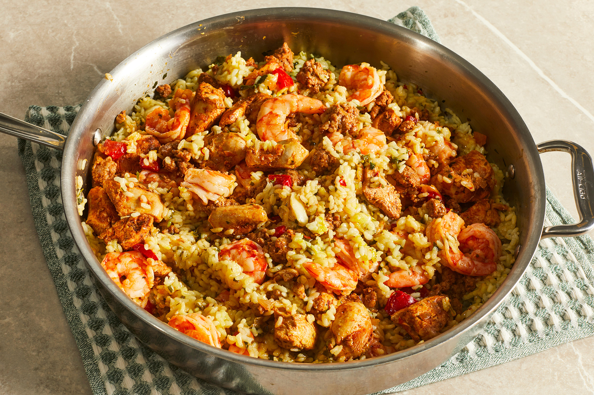

Return to Home Page
paella

Description
Paella is a classic Spanish dish featuring saffron rice with chorizo, chicken, and seafood.
Ingredients
- 2 tablespoons olive oil
- 1 tablespoon ground paprika
- 2 teaspoons dried oregano
- salt and ground black pepper to taste
Steps
- Mix olive oil, paprika, oregano, salt, and pepper for marinade in a glass bowl.
- Add bell pepper and sausage; cook and stir, breaking sausage up with a spatula, for 5 minutes. Add shrimp; cook and stir until shrimp are bright pink on the outside and the meat is opaque, about 2 minutes.